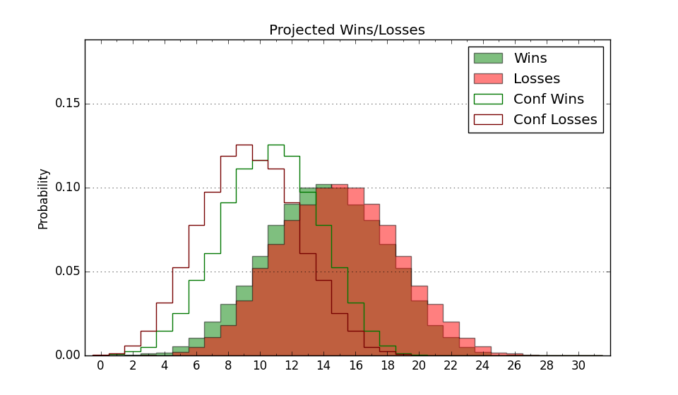

| Home | Game Probabilities | Conferences | Preseason Predictions | Odds Charts | NCAA Tournament |
| City: | Buffalo, New York | |
| Conference: | Metro Atlantic (1st)
| |
| Record: | 0-0 (Conf) 1-2 (Overall) | |
| Ratings: | Comp.: -8.1 (252nd) Net: -7.7 (243rd) Off: 95.9 (258th) Def: 103.6 (196th) SoR: 6.3 (162nd) |
| Remaining | ||||||
|---|---|---|---|---|---|---|
| Date | Opponent | Win Prob | Pred. | |||
| 11/24 | (N) Wofford (259) | 51.4% | W 75-74 | |||
| 11/25 | (N) Western Kentucky (156) | 30.0% | L 68-74 | |||
| 11/26 | (N) Bowling Green (234) | 46.5% | L 73-74 | |||
| 12/1 | Quinnipiac (243) | 62.7% | W 75-71 | |||
| 12/3 | Saint Peter's (248) | 63.9% | W 68-64 | |||
| 12/6 | Robert Morris (261) | 67.0% | W 69-64 | |||
| 12/9 | @ Pittsburgh (37) | 3.9% | L 61-83 | |||
| 12/22 | @ High Point (269) | 39.0% | L 72-75 | |||
| 1/5 | @ Mount St. Mary's (276) | 39.7% | L 68-71 | |||
| 1/7 | @ Rider (257) | 36.1% | L 69-73 | |||
| 1/12 | Siena (335) | 79.6% | W 73-63 | |||
| 1/14 | Fairfield (300) | 73.1% | W 72-65 | |||
| 1/19 | @ Iona (159) | 19.1% | L 67-77 | |||
| 1/21 | @ Saint Peter's (248) | 34.2% | L 64-68 | |||
| 1/26 | Manhattan (323) | 76.6% | W 73-64 | |||
| 1/28 | Marist (263) | 67.5% | W 70-65 | |||
| 2/4 | @ Quinnipiac (243) | 33.0% | L 71-76 | |||
| 2/6 | @ Niagara (304) | 45.4% | L 68-69 | |||
| 2/10 | Iona (159) | 44.6% | L 71-73 | |||
| 2/16 | @ Marist (263) | 37.9% | L 66-69 | |||
| 2/18 | @ Siena (335) | 53.4% | W 68-67 | |||
| 2/23 | Niagara (304) | 73.9% | W 72-65 | |||
| 3/1 | Mount St. Mary's (276) | 69.1% | W 73-67 | |||
| 3/3 | Rider (257) | 65.8% | W 73-68 | |||
| 3/7 | @ Fairfield (300) | 44.4% | L 68-70 | |||
| 3/9 | @ Manhattan (323) | 49.1% | L 68-69 | |||
| Previous | Game Score | |||||
| Date | Opponent | Win Prob | Result | Off | Def | Net |
| 11/8 | @Syracuse (120) | 13.7% | L 77-89 | 13.8 | -10.8 | 3.0 |
| 11/11 | @St. Bonaventure (112) | 12.9% | W 70-67 | 6.0 | 13.9 | 19.9 |
| 11/15 | @Cleveland St. (187) | 23.4% | L 61-71 | -11.0 | 9.1 | -1.9 |
| Stats & Trends | |||||
|---|---|---|---|---|---|
| Current | Day | Week | Month | Season | |
| Composite | -8.1 | -1.4 | -1.0 | +0.1 | +0.1 |
| Comp Rank | 252 | -17 | -11 | +1 | +1 |
| Net Efficiency | -7.7 | -7.2 | -11.2 | -- | -- |
| Net Rank | 243 | -58 | -94 | -- | -- |
| Off Efficiency | 95.9 | -1.8 | -15.1 | -- | -- |
| Off Rank | 258 | -23 | -169 | -- | -- |
| Def Efficiency | 103.6 | -5.4 | +4.0 | -- | -- |
| Def Rank | 196 | -69 | +43 | -- | -- |
| SoS Rank | 54 | -2 | +9 | -- | -- |
| Exp. Wins | 14.1 | -0.5 | -0.2 | +1.0 | +1.0 |
| Exp. Conf Wins | 10.7 | -0.4 | +0.2 | +0.6 | +0.6 |
| Conf Champ Prob | 11.4 | -2.0 | +0.6 | +2.7 | +2.7 |

| Advanced Stats | ||
|---|---|---|
| Stat | Value | Rank |
| Off Eff FG % | 0.492 | 182 |
| Off Ast Ratio | 0.118 | 268 |
| Off ORB% | 0.239 | 254 |
| Off TO Rate | 0.152 | 180 |
| Off FT Ratio | 0.187 | 352 |
| Def Eff FG % | 0.537 | 271 |
| Def Ast Ratio | 0.132 | 167 |
| Def ORB% | 0.301 | 229 |
| Def TO Rate | 0.154 | 177 |
| Def FT Ratio | 0.347 | 201 |